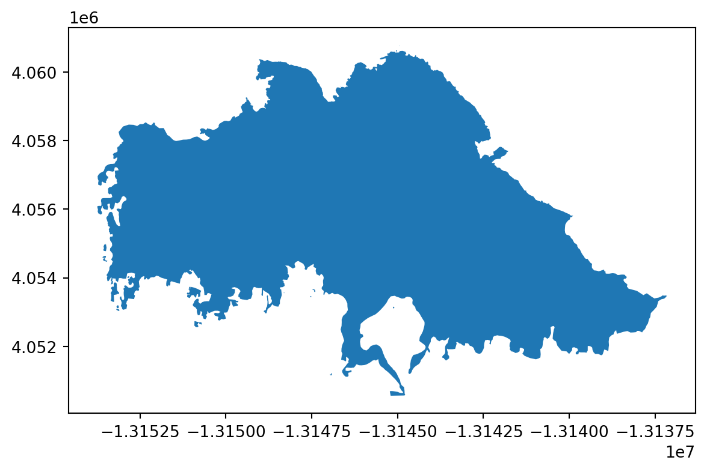
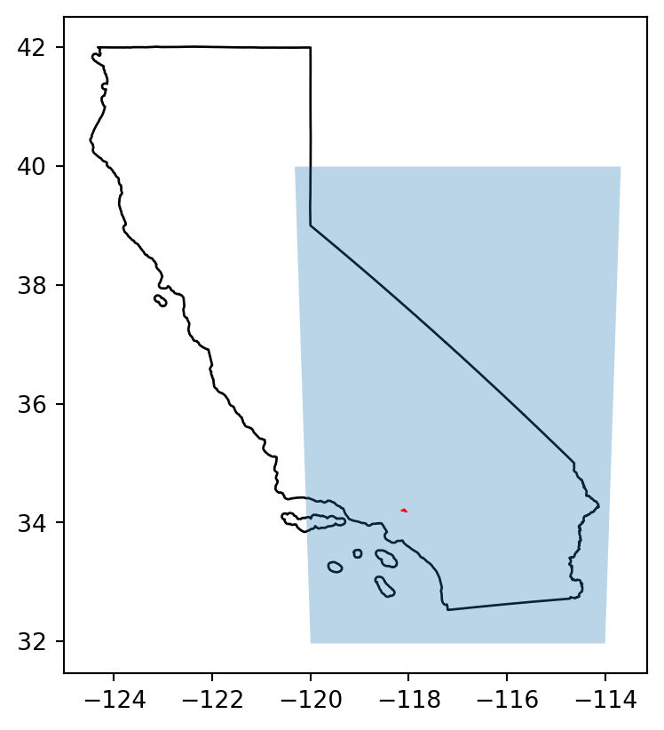
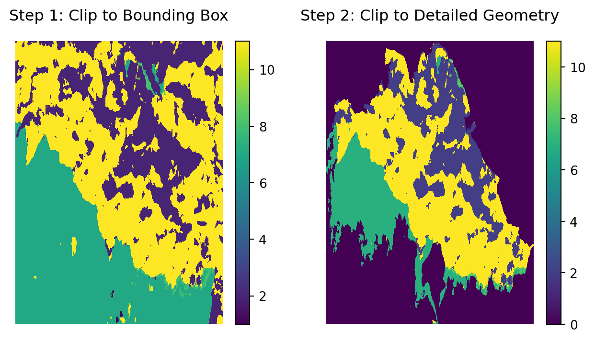
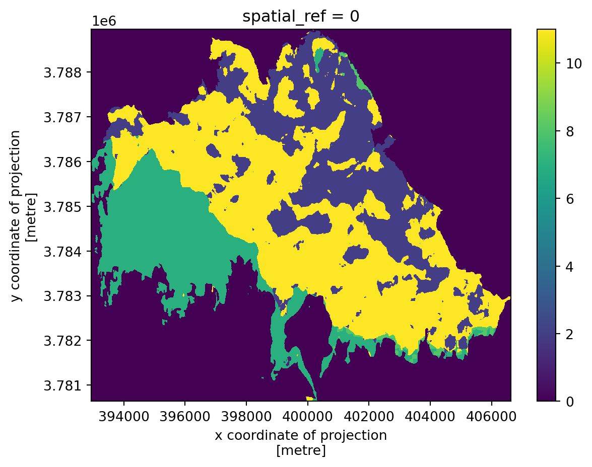
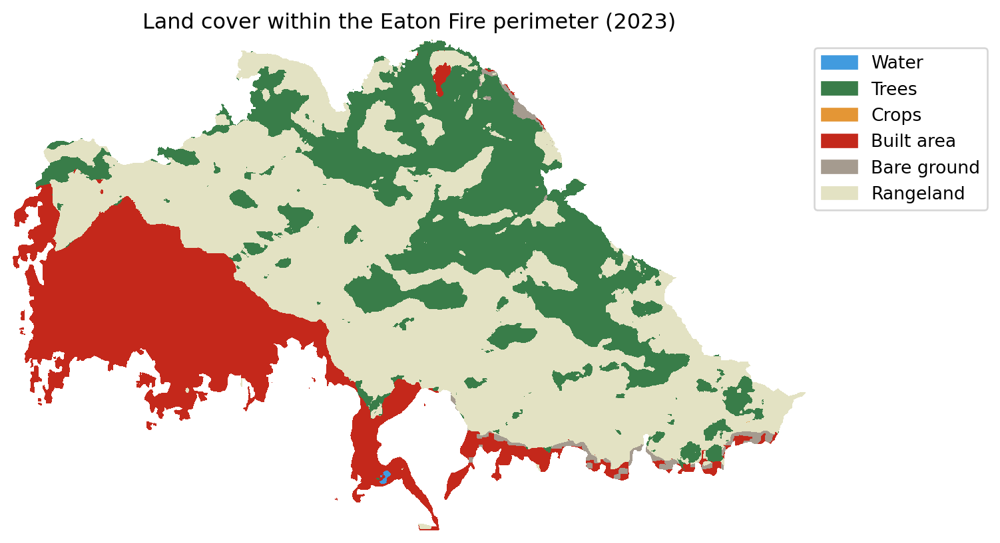
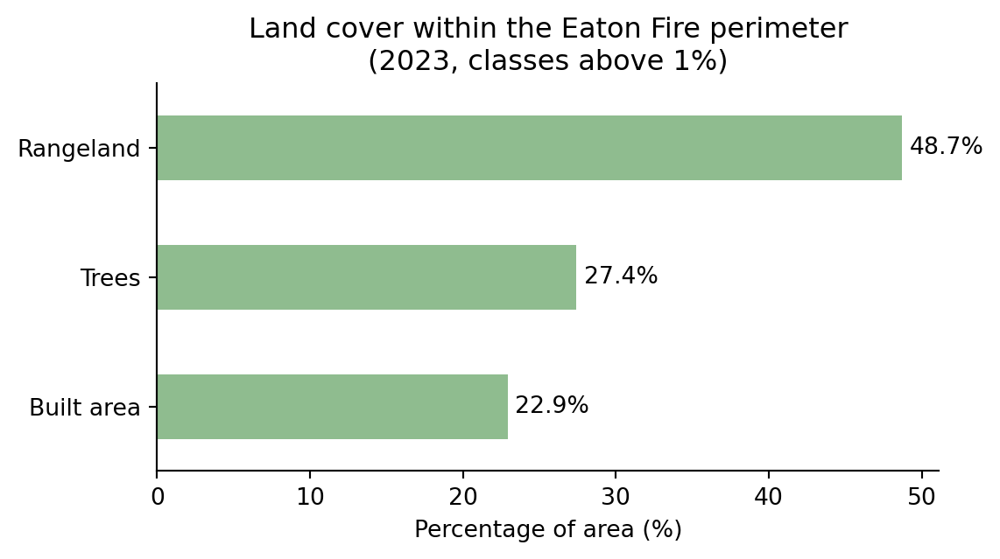

import os
import numpy as np
import pandas as pd
import matplotlib.pyplot as plt
import matplotlib.patches as mpatches
import geopandas as gpd
import rioxarray as rioxr
from shapely import box
import pystac_client
import planetary_computer
from IPython.display import Image19 Land cover statistics
In January 2025, the Eaton and Palisades fires burned through Los Angeles County, where wildlands meet neighborhoods. What was on the ground before the fires? How much of the burned area was trees, shrubs and grasses, and how much was buildings and roads? In this lesson we answer these questions by combining the fire perimeters with a land cover map from the Microsoft Planetary Computer. Along the way, we’ll see why we need to check a dataset’s CRS before calculating any area.
By the end of this lesson, students will be able to:
- search a STAC catalog by bounding box and date, and check that the item they selected is the right one,
- clip a large raster to a polygon efficiently,
- tell categorical from continuous rasters, and plot a categorical raster with one color per class and a legend,
- check a dataset’s CRS from the data itself and decide whether it is suitable for calculating areas, and
- calculate the area and percentage covered by each land cover class within a polygon.
About the data
In this lesson we will use three datasets.
The first one is the 10 m Annual Land Use Land Cover (9-class) V2 maps produced by Impact Observatory, Microsoft and Esri from Sentinel-2 imagery [1]. This is a categorical raster with a 10 m x 10 m pixel resolution and one map per year from 2017 to 2023. We will access this data through the Microsoft Planetary Computer (MPC) data catalog.
The second dataset is the perimeters of the Eaton and Palisades fires, which burned in Los Angeles County in January 2025.
The third dataset is a shapefile with the California state boundary, from the US Census Bureau’s 2016 TIGER/Line shapefiles [2]. We will only use it to see where the land cover raster sits relative to the fire perimeters.
We will also use a CSV file with the code, name and official color of each land cover class. We made it from the raster’s metadata and the MPC’s class map. The last section of this lesson shows how to get this information from the data itself.
Fire perimeter preparation
Let’s start by importing the necessary libraries:
Then import the Eaton Fire perimeter:
eaton = gpd.read_file(os.path.join('data',
'Eaton_Perimeter_20250121',
'Eaton_Perimeter_20250121.shp')
)
# Examine fire perimeter data
print(eaton.crs)
print(eaton.shape)
eaton.plot()EPSG:3857
(20, 5)
Notice the perimeter is not a single polygon: it is made of several “Heat Perimeter” polygons. That’s fine for what we’ll do, since we’ll use all of them together.
We’ll also import the CSV with the land cover class codes, names and colors. We’ll use it later in the lesson:
labels = pd.read_csv(os.path.join('data', 'io-lulc-9-class-labels.csv'))Catalog search
Our goal is to retrieve the land cover data over the fire perimeter. In the last lesson we used a GeoJSON-type dictionary to do the catalog search. Here we will use a list [xmin, ymin, xmax, ymax] with the coordinate values defining the edges of the region we want to search data over. Just as with the GeoJSON, these coordinates have to be in the EPSG:4326 CRS.
Our bounding box will come from the Eaton Fire perimeter. Notice we use method chaining to reproject and extract the bounds.
# Create list of bounding box coords for search in 4326 CRS
eaton_bbox = list(eaton.to_crs('epsg:4326')
.total_bounds
)
eaton_bbox[-118.16206999988188,
34.16189200012067,
-118.01305200016513,
34.23783206465605]Next, we connect to the Microsoft Planetary Computer data catalog and perform the search. The collection ID for this land cover data is io-lulc-annual-v02.
This collection has one map per year, so we also need to choose a year. The fires happened in January 2025 and the most recent map is for 2023, so we’ll search for 2023:
# Open MPC data catalog
catalog = pystac_client.Client.open(
"https://planetarycomputer.microsoft.com/api/stac/v1",
modifier=planetary_computer.sign_inplace,
)
# Search MPC catalog
search = catalog.search(collections=['io-lulc-annual-v02'],
bbox=eaton_bbox,
datetime='2023')
# Retrieve search items
items = search.item_collection()
print(f"Returned {len(items)} Items")
itemsReturned 2 Items
<pystac.item_collection.ItemCollection object at 0x1590dde50>
We asked for 2023 but got two items. Let’s look at the time range each one covers:
for item in items:
print(item.id, item.properties['start_datetime'], item.properties['end_datetime'])11S-2023 2023-01-01T00:00:00.000000Z 2024-01-01T00:00:00.000000Z
11S-2022 2022-01-01T00:00:00.000000Z 2023-01-01T00:00:00.000000ZEach map covers a full year, from January 1 to January 1 of the next year. The 2022 map ends on January 1, 2023, so it also matches our search for 2023.
Let’s select the 2023 map and view its pre-rendered image:
# Select the 2023 map (the first item) and check it is the right one
item = items[0]
assert item.properties['start_datetime'].startswith('2023')
print(item.id)
# Display pre-rendered image
Image(url=item.assets['rendered_preview'].href, width=600)11S-2023
We can see this is a big raster!
Explore raster
Next, we can go ahead and open the raster:
# Access raster data from item
lulc = rioxr.open_rasterio(item.assets['data'].href)
lulc<xarray.DataArray (band: 1, y: 89162, x: 56684)> Size: 5GB
[5054058808 values with dtype=uint8]
Coordinates:
* band (band) int64 8B 1
* x (x) float64 453kB 2.166e+05 2.166e+05 ... 7.834e+05 7.834e+05
* y (y) float64 713kB 4.432e+06 4.432e+06 ... 3.54e+06 3.54e+06
spatial_ref int64 8B 0
Attributes:
AREA_OR_POINT: Area
_FillValue: 0
scale_factor: 1.0
add_offset: 0.0Notice that band is a dimension of length 1. rioxarray always adds a band dimension, even when the raster has a single band. Removing it leaves a two-dimensional array with only y and x, which matches what the data is and makes it simpler to index and to pass to other functions. We’ll also check the raster’s data type and CRS:
# Remove length 1 dimension (band) and its coordinate
lulc = lulc.squeeze('band', drop=True)
print("Sizes of dimensions:", dict(lulc.sizes))
print("Data type:", lulc.dtype)
print("CRS:", lulc.rio.crs)Sizes of dimensions: {'y': 89162, 'x': 56684}
Data type: uint8
CRS: EPSG:32611Next, let’s look at how the raster is located with respect to the Eaton Fire perimeter and the CA state boundary:
# Create GeoDataFrame from raster bounding box
lulc_bbox = gpd.GeoDataFrame(geometry = [box(*lulc.rio.bounds())],
crs = lulc.rio.crs)
ca = gpd.read_file(os.path.join('data',
'ca_state_boundary',
'ca_state_boundary.shp'))
# ------------------------------------------------------------------
# Plot raster boundary, fire perimeter, and CA boundary
fig, ax = plt.subplots()
ca.plot(ax=ax, color='white', edgecolor ='black')
# Reproject lulc_bbox and fire perimeter to match CA crs
lulc_bbox.to_crs(ca.crs).plot(ax=ax, alpha=0.3)
eaton.to_crs(ca.crs).plot(ax=ax, color='red')
plt.show()
We can see the raster covers a big area relative to the fire perimeter. Since we want to calculate the land cover statistics within the fire perimeter, we will have to clip the raster to this area.
Clip raster to geometry
Before clipping, let’s check the raster’s no-data value, since rio.clip() will use it to fill the pixels outside the fire perimeter:
print('No-data value: ', lulc.rio.nodata)No-data value: 0The raster already has a no-data value, 0, so we don’t need to set one ourselves. We’ll look at what each code means in a moment.
In our first lesson about rasters we saw how to clip a raster to a rectangular region. In our case, we want to clip the raster exactly to the fire perimeter. Clipping can be a costly operation for such a big raster relative to a detailed geometry. So we will perform the clipping in two steps:
- Clip the raster to the fire perimeter bounding box using
rio.clip_box()and then - Clip the simplified raster to the fire perimeter using
rio.clip().
Why bother? To clip to a polygon, rio.clip() builds a mask with one true/false value per pixel of the raster it receives. Our raster has almost 90,000 x 57,000 pixels, about 5 billion values! Clipping to the bounding box first is fast, because it only selects rows and columns, and it shrinks the raster to about a million pixels before rio.clip() builds its mask.
# Match CRSs and verify update
eaton_match = eaton.to_crs(lulc.rio.crs)
assert eaton_match.crs == lulc.rio.crs
# Clip large raster to detailed geometry in two steps
lulc_step1 = lulc.rio.clip_box(*eaton_match.total_bounds)
lulc_step2 = lulc_step1.rio.clip(eaton_match.geometry)
# ------------------------------------------------------
fig, ax = plt.subplots(1, 2, figsize=(8, 4))
# Plot the first clipped raster
lulc_step1.plot(ax=ax[0])
ax[0].set_title("Step 1: Clip to Bounding Box")
ax[0].axis("off")
# Plot the second clipped raster
lulc_step2.plot(ax=ax[1])
ax[1].set_title("Step 2: Clip to Detailed Geometry")
ax[1].axis("off")
plt.show()
We can also do both steps at once using method chaining:
lulc_clip = (lulc.rio.clip_box(*eaton_match.total_bounds)
.rio.clip(eaton_match.geometry)
)
# Examine results
lulc_clip.plot()
Areas and CRSs
Some of the next exercises ask for areas. Before calculating any area, we need to check that our data is in a CRS where areas make sense:
- The CRS must be projected, so the coordinates are in units of length such as meters, not in degrees.
- The projection must not distort areas in our region. Equal-area projections preserve areas everywhere. Others, like UTM, distort them very little within their zone.
Let’s start by looking at the raster’s CRS:
print('CRS:', lulc.rio.crs)
print('Projected:', lulc.rio.crs.is_projected)
print('Units:', lulc.rio.crs.linear_units)
print('Resolution:', lulc.rio.resolution())CRS: EPSG:32611
Projected: True
Units: metre
Resolution: (10.0, -10.0)The raster is in UTM zone 11N (EPSG:32611), a projected CRS in meters, with 10 m x 10 m pixels. Each pixel covers 10 x 10 = 100 m² on the ground, so we can get areas by counting pixels. UTM is not an equal-area projection, but within its zone the area error is well below 1%: the scale factor goes from 0.9996 at the zone’s central meridian to about 1.001 at its edges, and areas change with the square of the scale factor, so they are off by at most about 0.2% [3].
Now the fire perimeter. A GeoDataFrame’s CRS:
eaton.crs<Projected CRS: EPSG:3857>
Name: WGS 84 / Pseudo-Mercator
Axis Info [cartesian]:
- X[east]: Easting (metre)
- Y[north]: Northing (metre)
Area of Use:
- name: World between 85.06°S and 85.06°N.
- bounds: (-180.0, -85.06, 180.0, 85.06)
Coordinate Operation:
- name: Popular Visualisation Pseudo-Mercator
- method: Popular Visualisation Pseudo Mercator
Datum: World Geodetic System 1984 ensemble
- Ellipsoid: WGS 84
- Prime Meridian: GreenwichThe Eaton perimeter is in EPSG:3857, WGS 84 / Pseudo-Mercator, also called Web Mercator. It is projected and its units are meters, so .area will happily return an answer in m². But Web Mercator, the projection used by web maps, preserves shapes and stretches areas more and more the farther we are from the equator. Let’s compare the area of the perimeter in its original CRS and in the raster’s CRS:
print(f"Area in {eaton.crs.name}: {eaton.area.sum() / 1000**2:.1f} km²")
print(f"Area in {eaton_match.crs.name}: {eaton_match.area.sum() / 1000**2:.1f} km²")Area in WGS 84 / Pseudo-Mercator: 83.4 km²
Area in WGS 84 / UTM zone 11N: 56.9 km²At the latitude of Los Angeles, Web Mercator makes areas almost 50% larger! And nothing warned us.
Important
Only calculate areas in a projected CRS that preserves areas in your region, such as an equal-area projection or the right UTM zone. Check the CRS in the data itself (gdf.crs, raster.rio.crs) before trusting an area.
Categorical or continuous?
TipCheck-in
Look at the colorbar in the plot of lulc_clip we made after clipping. Is land cover categorical data (each number is a label for a category) or continuous data (each number is a measurement)? What would a pixel with a value of 6 mean?
In a categorical raster the numbers are just codes: there is no order and nothing in between two classes. A continuous colormap like the default one suggests both, so a better choice is a categorical colormap, with one distinct color per class.
The MPC uses an official color for each class of this land cover product, listed in its class map for io-lulc-9-class. The labels data frame we imported at the beginning has, for each class, its code, its name and its official color as a hex code. No Data is fully transparent in the official map, so it gets white:
labels| code | class_label | color | |
|---|---|---|---|
| 0 | 0 | No Data | #ffffff |
| 1 | 1 | Water | #419bdf |
| 2 | 2 | Trees | #397d49 |
| 3 | 4 | Flooded vegetation | #7a87c6 |
| 4 | 5 | Crops | #e49635 |
| 5 | 7 | Built area | #c4281b |
| 6 | 8 | Bare ground | #a59b8f |
| 7 | 9 | Snow/ice | #a8ebff |
| 8 | 10 | Clouds | #616161 |
| 9 | 11 | Rangeland | #e3e2c3 |
Notice 0 means “No Data”. This is the raster’s no-data value we checked before clipping, so in lulc_clip the pixels outside the fire perimeter have code 0.
To use these colors, we give .plot() two lists:
levels: the edges between classes. Each class goes from its own code up to the next one (Trees from 2 to 4, Flooded vegetation from 4 to 5, …), and we add 12 as the last edge.colors: one color per class.
Since the colors are now categories, a legend works better than a colorbar. We’ll make one entry per class present in the clipped raster:
# Classes present in the clipped raster (without No Data)
present = labels[labels['code'].isin(np.unique(lulc_clip)) & (labels['code'] != 0)]
# One legend entry per class
# zip() pairs up the colors and names: ('#419bdf', 'Water'), ('#397d49', 'Trees'), ...
legend_entries = []
for color, name in zip(present['color'], present['class_label']):
legend_entries.append(mpatches.Patch(color=color, label=name))
fig, ax = plt.subplots(figsize=(8, 5))
lulc_clip.plot(ax=ax,
levels=list(labels['code']) + [12],
colors=list(labels['color']),
add_colorbar=False)
ax.legend(handles=legend_entries, loc='upper left', bbox_to_anchor=(1, 1))
ax.set_title('Land cover within the Eaton Fire perimeter (2023)')
ax.axis('off')
plt.show()
Land cover statistics
In the rest of this lesson we will calculate land cover statistics within the Eaton Fire perimeter. The following exercises will guide you through this process:
TipExercise 1
Use the
numpyfunctionnp.unique()to get the number of pixels per class inlulc_clip. HINT: check thenp.unique()documentation to see what thereturn_countsparameter does.Create a data frame
pix_countswith two columns: column one must be the code numbers for the pixels inlulc_clipand column two must be the number of pixels corresponding to each code. HINT: check our class notes onpandas.DataFramesUse the
labelsdata frame to add the class names to the codes in thepix_countsdata frame. Store the resulting data frame asclasses.What area within the fire perimeter (in km²) was classified as built area? HINT: how much area does each pixel cover?
Store the total number of pixels within the fire perimeter as a variable
total_pixels.Add the percentage of area covered by each class as a new column
percentageto theclassesdata frame. Sort the data frame by percentage coverage in descending order.Create a horizontal bar plot showing the classes with more than 1% land cover, with the largest class at the top. For example:

Check: the total area of the land cover pixels should be close to the area of the fire perimeter. Calculate both in km² and compare them.
Repeat the analysis for the Palisades Fire and compare the land cover within the two fire perimeters. Does the same raster cover both fires?
TipExercise 2
Interpret the results. The numbers are only the start: discuss these questions with a partner.
1. Almost a quarter of the Eaton Fire perimeter was built area. What does this tell you about where this fire burned?
2. The land cover map is from 2023 and the fires burned in January 2025. Is the map close enough to describe what was on the ground before the fires? What could have changed in between?
3. *Rangeland* covers about half of both perimeters. Read its description in the [dataset's documentation](https://planetarycomputer.microsoft.com/dataset/io-lulc-annual-v02). What kinds of vegetation does it group together? Why could this matter when we talk about fire?
4. Land cover within the perimeter tells us what was there, not what burned or how badly. What other data would you need to know how many buildings were destroyed, or how severely the vegetation burned?Class labels from the item’s metadata
In this lesson we read the class labels and colors from a CSV. In this last section we’ll see how to get the class labels from the file itself instead: they are stored in the STAC item’s metadata. To extract them, we’ll first learn a Python shortcut.
List comprehensions
A list comprehension is a short way of writing a for loop that builds a new list.
Example: doubling numbers
Here is a for loop that creates a new list by doubling each number in a given list:
numbers = [1, 2, 3, 4]
doubled = []
for n in numbers:
doubled.append(n * 2)
doubled[2, 4, 6, 8]And here is the same thing as a list comprehension:
doubled = [n * 2 for n in numbers]
doubled[2, 4, 6, 8]Read it from the inside out: “n * 2 for each n in numbers”. The square brackets tell Python to collect the results in a new list. Notice everything from the loop is still there (the loop variable n, the list numbers, and what we do with each element), just in one line.
Example: one value from each dictionary
Quick recap: a dictionary stores key-value pairs, written as {key: value}. We get a value by putting its key in square brackets. For example, if
pet = {'name': 'Tuna', 'age': 5}then pet['name'] is 'Tuna' and pet['age'] is 5.
The following is closer to what we will need in a moment. We have a list of dictionaries and want one value from each:
pets = [{'name': 'Tuna', 'age': 5},
{'name': 'Bowie', 'age': 12},
{'name': 'Momo', 'age': 17}]
pet_names = [pet['name'] for pet in pets]
pet_names['Tuna', 'Bowie', 'Momo']
TipCheck-in
- Print Momo’s age.
- Use list comprehension to make a list with the ages of the pets.
Class codes and names
Back to our land cover item. The class codes and names are stored in the metadata of the item’s data asset:
# Class codes and names from the item's metadata
class_values = item.assets['data'].extra_fields['file:values']
class_values[{'values': [0], 'summary': 'No Data'},
{'values': [1], 'summary': 'Water'},
{'values': [2], 'summary': 'Trees'},
{'values': [4], 'summary': 'Flooded vegetation'},
{'values': [5], 'summary': 'Crops'},
{'values': [7], 'summary': 'Built area'},
{'values': [8], 'summary': 'Bare ground'},
{'values': [9], 'summary': 'Snow/ice'},
{'values': [10], 'summary': 'Clouds'},
{'values': [11], 'summary': 'Rangeland'}]class_values is a list of dictionaries, one per class, like {'values': [0], 'summary': 'No Data'}. We want two lists out of it: all the codes and all the names. This is a job for a list comprehension!
TipExercise
First, predict the output of each line. Then run it to check your prediction.
class_values[0]class_values[0]['values']class_values[0]['values'][0][c['values'][0] for c in class_values]
Now write your own:
- Write a
forloop that collects thesummaryvalue of each element ofclass_valuesinto a list. - Rewrite your loop from 5 as a list comprehension.
Now let’s put both list comprehensions to work: one gets the codes and the other gets the class names, and together they make a data frame with one row per class. We’ll call it labels_from_item, so we don’t overwrite the labels we read from the CSV:
labels_from_item = pd.DataFrame({'code': [c['values'][0] for c in class_values],
'class_label': [c['summary'] for c in class_values]})
labels_from_item| code | class_label | |
|---|---|---|
| 0 | 0 | No Data |
| 1 | 1 | Water |
| 2 | 2 | Trees |
| 3 | 4 | Flooded vegetation |
| 4 | 5 | Crops |
| 5 | 7 | Built area |
| 6 | 8 | Bare ground |
| 7 | 9 | Snow/ice |
| 8 | 10 | Clouds |
| 9 | 11 | Rangeland |
Class colors
The colors are not in the item’s metadata. The MPC lists them in its class map for io-lulc-9-class as RGBA values (red, green, blue, transparency). Let’s add them as hex codes, in the same order as the codes. No Data is fully transparent in the official map, so we’ll use white for it:
# Official colors from the MPC class map, as hex codes
labels_from_item['color'] = ['#ffffff', # No Data
'#419bdf', # Water
'#397d49', # Trees
'#7a87c6', # Flooded vegetation
'#e49635', # Crops
'#c4281b', # Built area
'#a59b8f', # Bare ground
'#a8ebff', # Snow/ice
'#616161', # Clouds
'#e3e2c3'] # Rangeland
labels_from_item| code | class_label | color | |
|---|---|---|---|
| 0 | 0 | No Data | #ffffff |
| 1 | 1 | Water | #419bdf |
| 2 | 2 | Trees | #397d49 |
| 3 | 4 | Flooded vegetation | #7a87c6 |
| 4 | 5 | Crops | #e49635 |
| 5 | 7 | Built area | #c4281b |
| 6 | 8 | Bare ground | #a59b8f |
| 7 | 9 | Snow/ice | #a8ebff |
| 8 | 10 | Clouds | #616161 |
| 9 | 11 | Rangeland | #e3e2c3 |
This is exactly what’s in the CSV we read at the beginning of the lesson:
labels_from_item.equals(labels)TrueReferences
[1]
Impact Observatory, Microsoft, and Esri, “10m Annual Land Use Land Cover (9-class) V2,” Microsoft Planetary Computer. 2023. Available: https://planetarycomputer.microsoft.com/dataset/io-lulc-annual-v02. [Accessed: Nov. 21, 2026]
[2]
U.S. Census Bureau, “TIGER/Line Shapefiles: States (2016).” U.S. Census Bureau, 2016. Available: https://www.census.gov/geographies/mapping-files/time-series/geo/tiger-line-file.2016.html. [Accessed: Oct. 21, 2026]
[3]
J. P. Snyder, Map projections: A working manual. in U.s. Geological Survey Professional Paper, no. 1395. Washington, DC: U.S. Government Printing Office, 1987. doi: 10.3133/pp1395. Available: https://pubs.usgs.gov/publication/pp1395